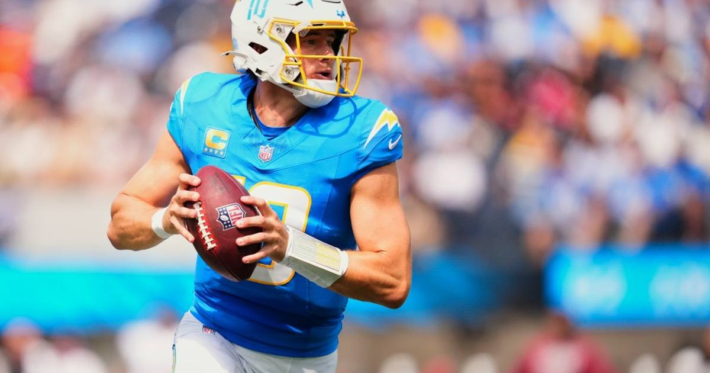

TSL Bets: Justin Herbert UNDER 200.5 passing yards vs the Ravens (-114)
The Chargers are 0-8, Herbert's top two receivers are out, his finger is hurt, and Baltimore's secondary gives up 6.2 net yards per attempt. The play: Herbert UNDER 200.5 passing yards (-114) on Monday Night Football.

The game slip
Los Angeles Chargers (0-8) at Baltimore Ravens (4-5)
Monday, 8:15 PM ET — M&T Bank Stadium, Baltimore — ESPN
• Spread: Ravens -4.5 (-108)
• Total: 39
• Moneyline: Chargers +180 / Ravens -217
• Odds source: BetMGM via SportsBettingDime, November 15; total via Win Daily
Injury report — Chargers: WR Ladd McConkey OUT (back — did not practice all week, will not travel). WR Brenen Thompson OUT (hamstring). S Kendall Williamson OUT (calf), CB Isas Waxter OUT (ankle), OT Branson Taylor OUT (ankle). G Kayode Awosika, DT Justin Eboigbe, OT Trey Pipkins, LB Denzel Perryman and TE David Njoku all questionable. QB Justin Herbert hurt the middle finger on his non-throwing hand last Sunday; X-rays were negative and he is expected to play.
Injury report — Ravens: QB Lamar Jackson on injured reserve (thumb surgery, 6-to-10-week recovery). QB Tyler Huntley on injured reserve (toe, season-ending). S Jaylinn Hawkins OUT (knee). RB Adam Randall questionable (neck/hamstring). QB Jacoby Brissett — acquired from Arizona on November 6 — will make his Baltimore debut. WR Rashod Bateman, S Kyle Hamilton and CB Nate Wiggins finished the week without designations.
Storylines: The Chargers are the league's worst team at 0-8 and haven't won a game since beating Dallas on December 21, 2025. The Ravens are 4-5 after four straight losses and are one game outside the AFC's final playoff spot. Baltimore has had 11 days since its last game. Brissett is the fourth quarterback to start for the Ravens this season, and the Ravens are 7-15 without Lamar Jackson as their starter since 2019, averaging 17.3 points.
The bet
Justin Herbert UNDER 200.5 passing yards (-114, DraftKings via Action Network)
Bleacher Nation lists the same line at 200.5 (-113). The consensus line across books sits between 200.5 and 206.5 — take the under at any number 200.5 or higher.
Why this prop
Herbert is averaging 198.9 passing yards per game this season — 1,591 yards through eight games, with six touchdowns and 11 interceptions. He's been held under 200 passing yards in four of his last six outings, averaging 184.2 yards through the air in that stretch. The number is right at his average, and everything around him points down.
Start with the receivers. McConkey — his top target — is out entirely with a back injury. Thompson, the deep threat, is out with a hamstring. That's the top of the depth chart gone against a Ravens secondary anchored by Kyle Hamilton and Marlon Humphrey that holds opposing quarterbacks to 6.2 net yards per pass attempt.
Then the protection. Herbert has been sacked and pressured into checkdowns all season behind a line that is now also missing Branson Taylor, and the finger injury on his non-throwing hand — even on the glove hand — is the kind of thing that shows up in ball placement on a cold night in Baltimore.
The Chargers as a team average 201.9 passing yards per game, the worst passing offense in the league by the numbers that matter. Nothing about this matchup says 201 or more.
The honest caveats
Game script is the risk. The Ravens are 4.5-point favorites, but if Baltimore jumps ahead early, the Chargers will have to throw — and garbage-time yards count the same as any other. Herbert has cleared 200.5 twice in his last six, so this isn't a lock; it's a number that sits above his average against a defense built to keep him under it. And Brissett's debut could mean short fields for Baltimore, which would mean more possessions — and more throws — for Herbert.
But at 200.5, with his top two receivers out and a top-five secondary waiting, the under is the side.
The record
TSL Bets is 19-32 in November, 23-53 all-time. Props are 5-2 in November — the only winning singles category — that's why the daily single is a prop.
If you or someone you know has a gambling problem, call 1-800-GAMBLER.
Sources
• Chargers vs Ravens Predictions & Expert Picks for MNF (SportsBettingDime)
• Justin Herbert Prop Bets: Odds, Trends & Picks (Action Network)
• Player Prop Bets for Ravens vs. Chargers (Bleacher Nation)
• Chargers vs Ravens MNF Props: 3 QB Picks for Herbert, Brissett (HelloRookie)